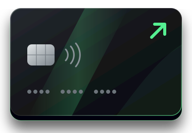

Serasa, SPC Brasil, Boa Vista/Equifax e cartórios de protesto
Apontamentos nesses órgãos podem ser analisados e regularizados, conforme a natureza de cada registro e o escopo do serviço contratado.
A Scorevin analisa suas restrições de crédito e busca a regularização de apontamentos indevidos por meio de medidas administrativas e jurídicas cabíveis.
Atendimento individual, análise documental e acompanhamento das providências realizadas.
Nome negativado no Serasa ou SPC.
Apontamentos em cadastros de proteção ao crédito.
Dificuldade para solicitar cartões e empréstimos.
Financiamentos recusados.
Nossa equipe avalia a situação do seu CPF e verifica a existência de fundamentos para contestação, correção ou exclusão de registros nos órgãos de proteção ao crédito. Quando necessário e juridicamente cabível, advogados habilitados poderão avaliar a adoção de medidas judiciais.
Apontamentos nesses órgãos podem ser analisados e regularizados, conforme a natureza de cada registro e o escopo do serviço contratado.
Contestação e pedidos de correção ou exclusão de registros indevidos ou irregulares, com base na análise documental.
Requerimentos administrativos e medidas judiciais, de acordo com os fundamentos e os documentos de cada caso.
Um processo organizado para você saber o que acontece em cada etapa.
O cliente contrata a análise inicial.
Após a confirmação do pagamento, preenche nome completo, CPF, score informado e dados sobre suas restrições.
A equipe verifica as informações fornecidas e identifica possíveis irregularidades.
São avaliadas medidas administrativas e, quando houver fundamento, medidas jurídicas conduzidas por profissionais habilitados.
O cliente acompanha o andamento do atendimento em sua área exclusiva.
O que fazemos no seu caso e o que a regularização pode representar para o seu crédito.
Na sua área exclusiva, você acompanha as informações enviadas, as solicitações de documentos e o status de cada etapa do atendimento.
Nosso prazo operacional estimado para análise e encaminhamento das providências é de 20 a 35 dias, conforme a complexidade do caso, contados a partir do recebimento das suas informações e documentos. Respostas dos órgãos de proteção ao crédito e dos cartórios, assim como decisões judiciais, seguem prazos próprios.
Solicite uma análise individual das suas restrições de crédito e conheça as providências que podem ser aplicáveis ao seu caso.
Se houver fundamento para medida judicial, você conhece as condições antes e decide se quer seguir.

*Não inclui petições, honorários advocatícios nem despesas judiciais.
A Scorevin analisa a possibilidade de contestar e solicitar a correção ou exclusão de registros indevidos ou irregulares. A efetiva retirada depende dos fundamentos e das providências aplicáveis ao caso.
Quando existe fundamento jurídico, o caso pode ser avaliado por advogados habilitados para eventual adoção de medidas judiciais, observadas as condições da contratação.
A correção de informações que prejudicam o histórico de crédito pode influenciar a pontuação, mas o cálculo é realizado pelos birôs e depende de outros fatores.
A regularização de restrições pode melhorar as condições de avaliação do perfil, mas a aprovação depende das políticas de cada instituição financeira.
O prazo operacional estimado é de 20 a 35 dias, conforme a complexidade do caso. Prazos de terceiros e decisões judiciais podem ser diferentes.
Você recebe acesso ao cadastro seguro para informar seus dados e acompanhar o atendimento na sua área exclusiva.
As condições de cancelamento e reembolso serão informadas nos Termos de Uso antes do pagamento, respeitando o direito de arrependimento previsto no Código de Defesa do Consumidor para compras on-line.
Não. A Scorevin é um serviço independente e não representa birôs de crédito nem instituições financeiras.
Conheça o serviço de regularização de restrições da Scorevin e dê o primeiro passo para recuperar sua saúde de crédito.
COMEÇAR MINHA ANÁLISE